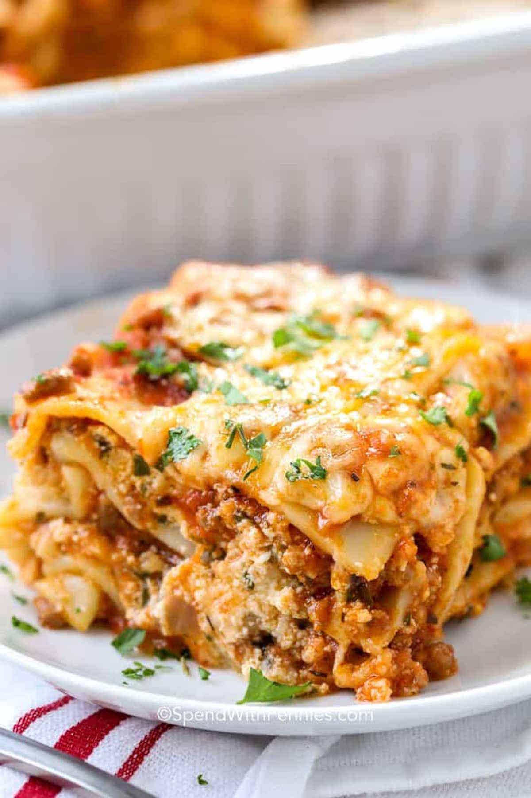

Lasagna Recipe

Description
In this classic lasagna recipe, sheets of pasta are layered with a cheesy filling, a rich meaty tomato sauce, and more cheese and then baked until bubbly and browned.
Ingredients
- Cheese Filling: For this classic lasagna recipe, the cheese filling has ricotta and parmesan with seasonings. You can make homemade ricotta cheese or replace it with cottage cheese.
- Meat: I use both Italian sausage and ground beef for great flavor. If using all beef, add ¼ teaspoon of fennel seeds and some Italian seasoning to the meat mixture for flavor, or make my homemade Italian sausage.
- Sauce: To keep this sauce quick, I use pasta sauce or marinara sauce (its easy to make from scratch with crushed tomatoes and canned tomatoes if youd prefer). If using store-bought sauce, I love Raos for flavor.
- Spinach (variation): Spinach is optional but delicious in lasagna. For spinach lasagna, thaw 10oz of frozen spinach, squeeze out the moisture, and add it along with the cheese layer.
Instructions
- Boil pasta: In a large pot of salted water boil lasagna noodles per the recipe below.
- Prepare meat sauce: Cook sausage and beef with onion and garlic. Drain well, add the pasta sauce (I love this brand) & simmer it for a few minutes to thicken.
- Combine cheese mixture: Stir the cheese mixture together in a bowl.
- Layer & bake: Layer the meat sauce and cheese mixture with lasagna noodles and bake until the top of the lasagna is golden brown.
Home